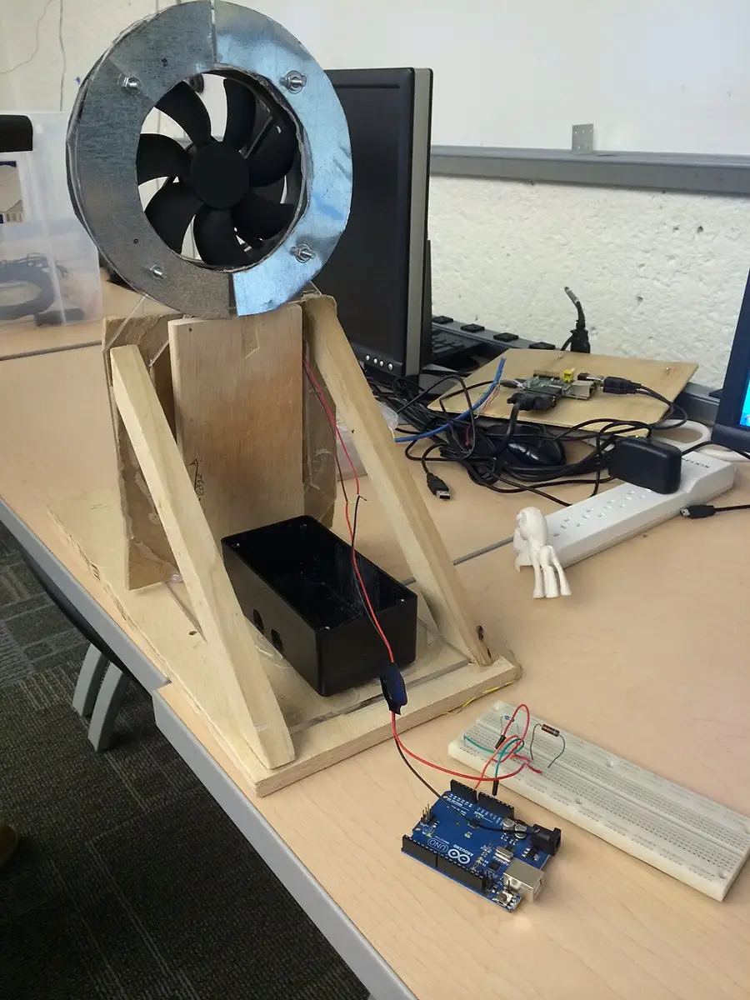

Wind Turbine Blade Trials
One fan, one hub, many blades: change a single variable at a time and let two honest measures, revolutions and lifted clips, judge every design.
Ages 13–1440–60 min4 materials
- Ages
- 13–14
- Group
- 3–18 kids
- Time
- 40–60 min
- Where
- Indoors
- Prep
- Some prep needed

Setup
Set the rig up like an instrument, because it is one: the fan goes at a measured distance from the hub, marked on the floor or the bench with tape, in metres, and recorded on every trials sheet, because a rig that drifts between runs makes liars of all the data downstream. Test the hub yourself: it must spin freely for several seconds from a breath of air, the thread must wind evenly on the axle, and the clip load must rise without snagging. Cut the control blade set before the teams arrive, three identical plain blades at a middling pitch, and run the rig three times with it, recording your own numbers: those three runs are the session's honesty anchor, the proof that the rig gives the same design the same answer twice, and any rig that cannot repeat its own control numbers is fixed at setup, not argued with during the trials. Decide the variable list on paper now, blade count, blade length, pitch angle, blade shape (width and curve), because the framing will restrict each team to changing them one at a time, and a restriction announced after the first run is a rule invented to spoil somebody's result.
Materials
- one desk fan with a guarded grille, three speeds, positioned by the adult and moved by nobody else (the wind source, constant, caged, and the trials' whole weather system)
- a test hub on a stand (a dowel axle in a heavy base, spinning freely, with paper clips hanging from a thread wound on the axle. Lifted clips are the turbine's workload and the trials' second measure)
- blade stock (stiff card in several weights, scissors that live at the bench, rulers, protractors for pitch angles, tape and a glue stick, every blade cut to a recorded pattern so a winner can be re-cut exactly)
- the trials sheet (one per team: blade count, length, pitch, and shape for every run, with columns for revolutions in thirty seconds and clips lifted. The sheet is the experiment, and a run that is not written down did not happen)
Steps
- The framing, at the rig, the control numbers on display: 'This fan is the weather, and it does not play favourites: same speed, same distance, every run. Your turbine will be judged by two measures and no opinions, revolutions in thirty seconds, counted; and paper clips lifted on the thread, counted. Here is the law that makes this engineering instead of tinkering: one variable at a time. Change the blade count OR the pitch OR the length, run it, write it down, and you will learn what that variable does. Change two things and you have learned nothing twice. The sheet will not tell you which change did it, and neither will I. Every run goes on the sheet with its full design written out, because a winning blade nobody can re-cut is a rumour, and this room deals in designs.' The control set is run once more, live, and its numbers compared with setup's: the rig repeats, the room sees it repeat, and the trials begin from trust in the instrument. The foundation every honest experiment stands on.
- First trials, the blade-count question: each team runs the control design, then their count variants, two blades, three, four, six, at the control's own pitch and length, three runs each, sheet filling in the open. The counting craft is taught while the numbers land: revolutions are counted by two counters independently and compared before they are written (a count the counters dispute is a run repeated, not averaged. The sheet has no column for guesses), and clips are added one at a time until the turbine stalls or the thirty seconds end, with the stalled number recorded as honestly as any success ('lifts four, stalls at five' is data; 'about five' is not). Teams present their count findings in the session's official shape, the best count, its numbers, and the margin, and disagreements between teams are settled at the rig, by re-running, never by seniority.
- Second trials, pitch and length: with blade count settled by each team's own evidence, teams take up pitch, the angle of the blade to the wind, set with the protractor and recorded in degrees, working their angle up in steps across runs and watching the two measures answer differently, because pitch is where the sheet starts teaching the session's real lesson: the design that spins fastest is not always the design that lifts most, and a turbine's job decides which measure matters. Length follows the same discipline. The adult's bench talk in this round is all design-of-experiments: interactions are named when the data hints at them ('your long blades only beat the short at the steeper pitch. That is an interaction, write it exactly that way'), and every claim in the room is required to carry its run numbers like a passport.
- The workload final: each team declares its champion design, chosen from its own sheet, re-cut exactly from its recorded pattern, because the final runs fresh blades, not the battered heroes of the trials, and the champions meet the session's stated workload: the standard clip load, lifted against the clock, revolutions counted, three runs each, at the fan's standard setting on the standard marks. The final's rules were the framing's rules and no new ones appear: one design, as documented; any failure, a blade tearing, a thread slipping, is recorded as the run's result and the design's sheet carries it, because a champion that fails under test conditions has told the room something the room paid a session to learn.
- The debrief, sheets in hand: each team presents its design's story as the sheet tells it, the variable that mattered most, the result that surprised them, the run they would stake their name on, and the room builds the session's conclusions on the wall from the sheets alone: fastest design, strongest design, and the design each team would actually build if the turbine had a real job, with the job named, because the session's last lesson is that engineering answers are answers to a purpose. The tell-back closes the trials: 'You came in with opinions about blades and you are leaving with evidence. You changed one thing at a time, you wrote everything down, you let a load of paper clips overrule your favourites, and the designs on this wall can be re-cut by strangers and will do again what they did today. That is the whole difference between making something that works and knowing why it works. The second one is engineering, and you have done it.' The champion sheets and blade patterns are filed together as the rig's permanent record, first page of the next session's evidence.
Variations
Easier: A two-variable version: blade count only, three designs, three runs each, the whole discipline of the sheet inside thirty minutes, for a first trials group or a short session.
Harder: A generator version (a confident group, with the adult's electrical discipline absolute): the hub drives a tiny hobby motor as a generator and a meter replaces the clip count as the second measure. Read by the adult's setup, never rewired by the teams; the variables, the sheet, and the law are identical.
⚠️ Safety
The fan is the weather and it is caged weather: the grille stays on, the fan is positioned and switched by the adult or at the adult's word, and no hand, blade, pencil, or trials sheet goes near the rig while it is running. Blades are changed only with the fan off and the hub still, and a blade that leaves the hub during a run stops the session's rig until the adult has re-checked the mounting, because a loose blade at fan speed is the one accident this record designs out in advance. Blade stock is card, cut at the bench with the bench's scissors, and finished blades are checked for the stiffness that keeps them out of the grille: a blade that flexes into the fan's face is retired at inspection, before it can be tested into trouble. The rig's stand is weighted and its fall zone kept clear; threads and clips are small parts that live on the tray and are counted at clearing-up like any bench's small stock. The generator variation, if used at all, is low-voltage hobby equipment assembled by the adult beforehand. No mains electricity is anywhere near this record's benches, ever.
🤝 Inclusion notes
The trials run on jobs at every reach: blade design can be led by the mind that draws the pattern while a partner's hands do the cutting to their line, the sheet credits the design to its team, and the pattern is the design's signature. Counting is doubled by design, which makes the second counter, the sheet-keeper, and the clip-loader full experimental roles rather than spare parts; a run's numbers enter the record through voices as readily as through hands, and the sheet-keeper's reading-back of each run before it is inked is the protocol that lets every team member verify what the sheet says. The rig's measures are announced aloud as standard practice, revolutions and clips called, not just written, so the evidence is public to the whole room in the moment it lands. Pitch is set with a protractor jig the adult prepares for any hand that needs one, and the workload final's presentation, each team's story from its sheet, can be given by any member, in any register, from a sheet that was kept to be read aloud.
⭐ Tried this? Rate it
Your ratings live in this browser only. Nobody else can see them. There are no community ratings here; every star on this card is yours.
Rate this activity, add a note, or write a reflection
✏️ Quick reflection
Optional, saved with your rating, and exported with "📋 Copy my week".
Full activity card,